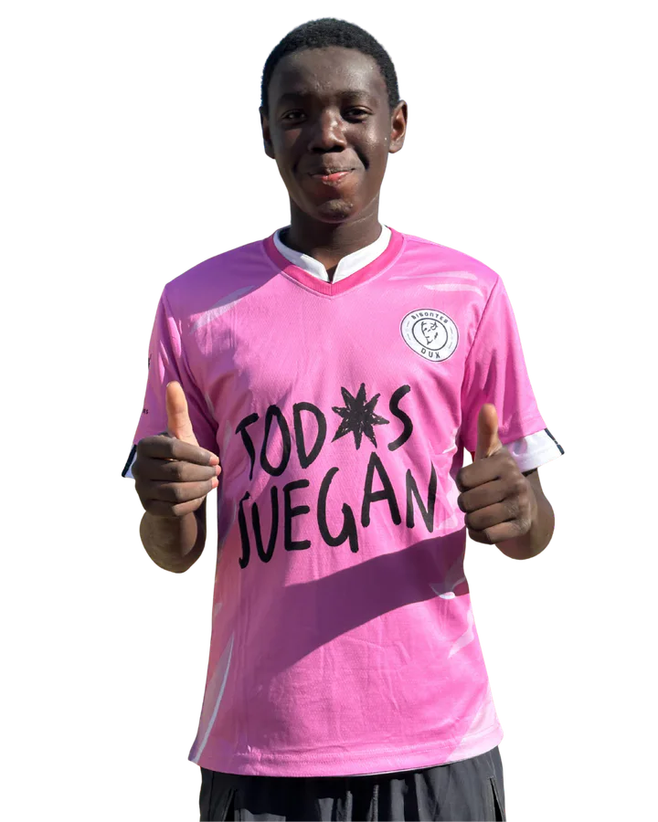

Dorsal 19 · Bisontes DUX
Yacouba Diarra
Yacouba Diarra es jugador de Bisontes DUX. Juega como mediocentro ofensivo y utiliza el dorsal 19.
- Equipo
- Bisontes DUX
- Función
- mediocentro ofensivo
- Dorsal
- 19

Dorsal 19 · Bisontes DUX
Yacouba Diarra es jugador de Bisontes DUX. Juega como mediocentro ofensivo y utiliza el dorsal 19.